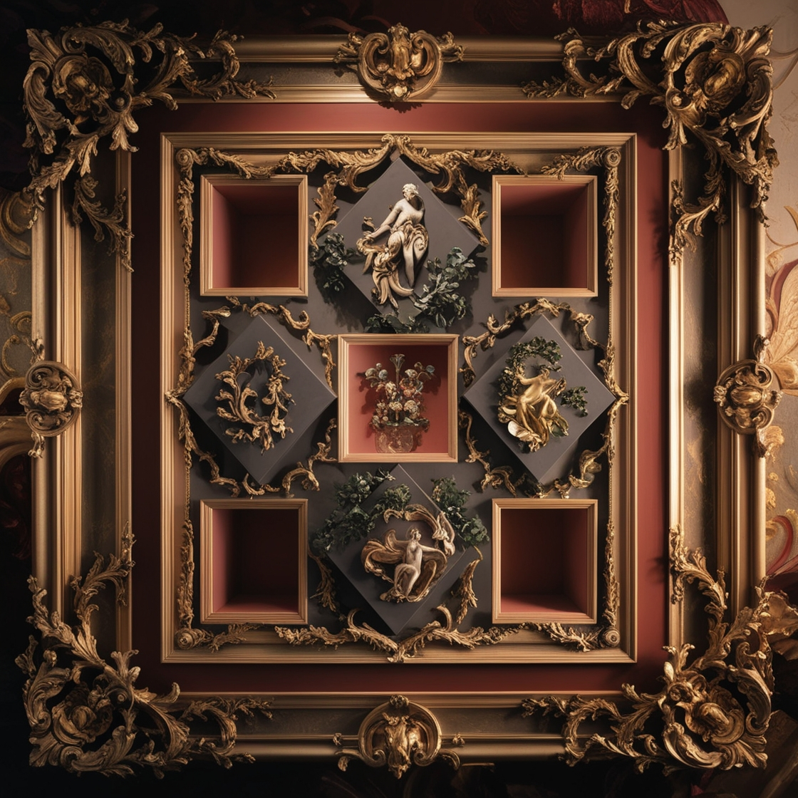

Vanguardia Visual
Bienvenido a tu Galeria de Arte preferida!
De Antes

Fecha 09/12/1698
Autor Joan Poig
Se muestra una obra con un marco barroco ornamentado, que se destaca por sus intrincados detalles dorados. En el centro de la composición, hay varios recuadros simétricos, con figuras escultóricas clásicas que parecen representar escenas mitológicas o de la antigüedad. Las esculturas están rodeadas de detalles naturales, como hojas o guirnaldas que les dan un toque de elegancia y dinamismo. Los colores predominantes son dorado, negro y rojo oscuro, lo que genera un contraste visual muy fuerte entre la riqueza del dorado y la profundidad del fondo. Las decoraciones florales y las curvas exageradas del marco crean una atmósfera lujosa y opulenta, típica del estilo rococó o barroco tardío. Este tipo de obra puede ser una combinación entre escultura y pintura en relieve, y el uso del espacio dentro de los recuadros da una sensación tridimensional que realza la composición visual general.
¿Que opina Joan Poig de su obra?
"Como Joan Poig, mi intención con esta obra es fusionar la elegancia clásica del barroco con un enfoque contemporáneo. Me fascina çla riqueza de los detalles y la opulencia visual de ese estilo, y quería recrear esa sensación de grandeza, pero estructurada de una manera más moderna y geométrica. Cada recuadro dentro de la composición está pensado para ofrecer una pequeña escena, casi como si cada sección contara una historia propia dentro de un marco mayor. Al usar el dorado y los relieves ornamentados, busco evocar la teatralidad y el dramatismo del pasado, mientras que la disposición simétrica aporta un orden que resuena con los valores estéticos actuales. Para mí, esta obra es un diálogo entre lo antiguo y lo nuevo, un homenaje al arte clásico, pero con una mirada fresca y personal."
¿Deseas dejar una opinión?
¿Como te llamas?
Escribe tu opinión
Envia tu opinion
Borrar Obra
Editar Obra
Volver a la Galeria